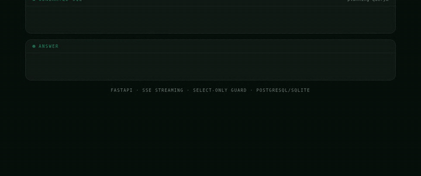

QUESTION IN → GUARDED SQL → ANSWER STREAMS OUT, TOKEN BY TOKEN
A FastAPI service that lets anyone query a SQL database in plain English. An LLM plans the query, a strict guard executes it read-only, and the answer streams back token-by-token — grounded in the actual rows, not the model's imagination.
QUESTION IN → GUARDED SQL → ANSWER STREAMS OUT, TOKEN BY TOKEN
The people with questions — ops, leadership, support — usually can't write SQL, so every answer routes through whoever can. The database knows; the interface is the bottleneck.
LLMs hallucinate and will happily write a DELETE. Letting a model near production data means treating its output as untrusted input — and full completions feel slow, so latency is a design problem too.
The model proposes, the guard disposes: every generated query passes a SELECT-only validator before execution, answers are composed from real result rows, and everything streams over SSE so the first token lands fast.
ARCHITECTURE
QUESTION
plain English
PLAN (LLM)
schema → SQL
GUARD
SELECT-only · 1 stmt
EXECUTE
row-capped
STREAM
SSE tokens
ON FAILURE: ONE RETRY WITH THE DATABASE ERROR ATTACHED · THEN A CLEAN ERROR EVENT
OpenAIProvider streams through LangChain's
ChatOpenAI when a key is configured; a deterministic
MockProvider takes over when it isn't. The pipeline
depends only on the interface — adding Claude or a local model touches one file.
One async generator yields typed events — status,
sql, rows,
token, done — and the
API layer just forwards them as SSE. Business logic never touches HTTP.
Builds the schema summary the model sees, validates everything the model returns, and executes on an async SQLAlchemy engine — PostgreSQL in production, SQLite for the zero-setup demo. Same code path either way.
The built-in playground renders the generated SQL, the row count, and the streaming answer as separate panels — deliberately transparent, because trust in an NL→SQL tool comes from seeing the query it actually ran.
DEEP DIVE
The core security stance: generated SQL gets exactly the same trust as a string
typed by an anonymous user — none. Before anything touches the database, the
query must be a single SELECT or
WITH statement, free of write keywords, and it runs
row-capped on a connection that executes one vetted statement.
The second grounding rule: the answering model only ever sees the executed query's actual result rows. It can phrase, it can summarize — it cannot invent numbers, because the only numbers in its context came out of the database.
db.py — the whole guard
_FORBIDDEN = re.compile(
r"\b(insert|update|delete|drop|alter|create|truncate|grant|revoke|attach|pragma|vacuum|replace)\b",
re.IGNORECASE)
def validate_sql(sql: str) -> str:
cleaned = sql.strip().rstrip(";").strip()
if not re.match(r"^(select|with)\b", cleaned, re.IGNORECASE):
raise UnsafeSqlError("Only SELECT queries are allowed")
if _FORBIDDEN.search(cleaned):
raise UnsafeSqlError("Query contains a forbidden keyword")
if ";" in cleaned:
raise UnsafeSqlError("Multiple statements are not allowed")
return cleaned
// Defense in depth: in production this sits on top of a read-only database role, not instead of one.
pipeline.py — fallback is part of the contract
for attempt in range(1, MAX_SQL_ATTEMPTS + 1): sql = await provider.generate_sql(question, schema, error) try: sql = db.validate_sql(sql) yield "sql", sql result = await db.run_select(sql) break except Exception as e: error = str(e) # fed back to the model — one retry, # with the database's own words
// A model that sees "no such column: total" usually fixes itself. A second failure returns a clean error event, never a stack trace.
STREAMING
A complete LLM answer takes several seconds; a first token takes a fraction of one. Streaming over Server-Sent Events means the user watches the answer being written instead of staring at a spinner — the ~60% cut in perceived latency on the project card comes from moving the wait into the reading. The async generator pattern makes it nearly free: FastAPI forwards events as the pipeline yields them.

THE STREAM, UP CLOSE
The SQL lands first (one event), the row count follows, then answer tokens arrive every few dozen milliseconds. Each panel is driven by a different SSE event type from the same response.
# main.py — the entire HTTP layer for /api/ask async def event_stream(): async for event, data in ask(req.question, provider): yield f"event: {event}\ndata: {json.dumps(data)}\n\n" return StreamingResponse(event_stream(), media_type="text/event-stream")
TRADE-OFFS
The keyword guard is simple and auditable, but a proper AST check (sqlglot) would also catch exotic dialect tricks. The honest answer is both, plus a read-only DB role — layers, not a single gate.
Four tables fit in any context window. Four hundred wouldn't — that's where retrieval over schema docs (pick the relevant tables first) becomes the planning step before the planning step.
Token streaming is strictly server→client, so SSE wins: plain HTTP, no upgrade handshake, trivially proxied. WebSockets earn their complexity only when the client needs to talk back mid-stream.
The 2026 refinement runs end-to-end: guarded NL→SQL, one-retry fallback, SSE streaming, the playground, and a pytest suite covering the guard rules and the full pipeline. It ships with a deterministic mock provider so it boots and demos with zero configuration — drop in an API key and the same pipeline runs live. Dockerized with a PostgreSQL compose setup; repository headed to my GitHub.
Want a walkthrough of the pipeline or a look at the code before it's public? Email me.